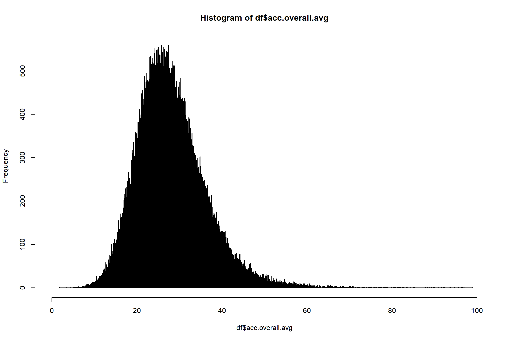
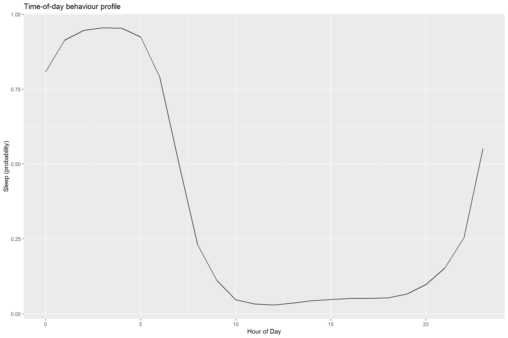
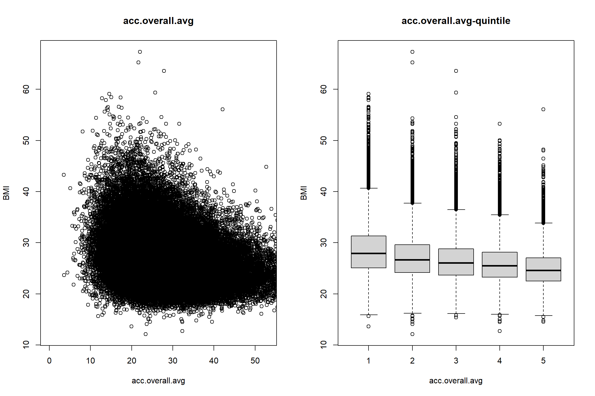
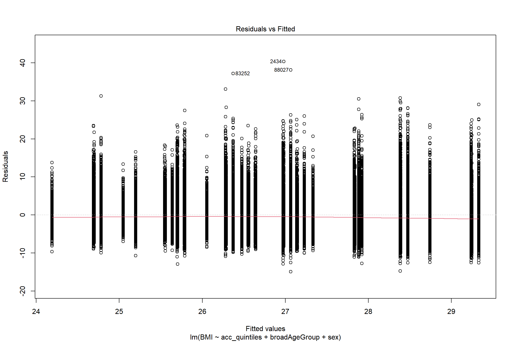
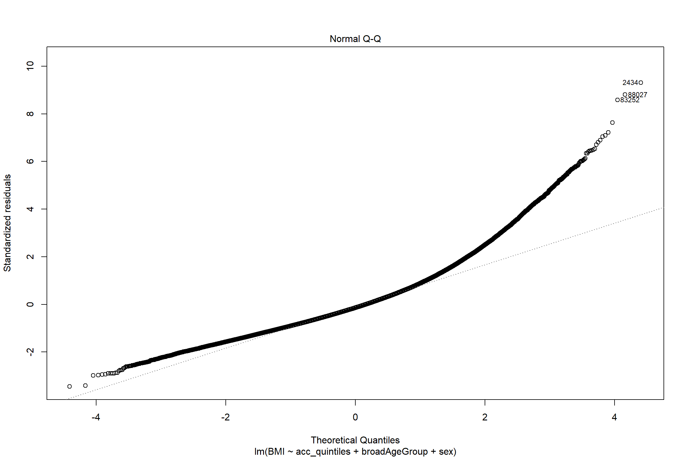
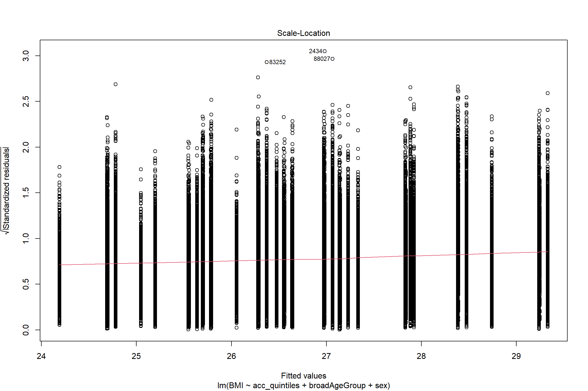
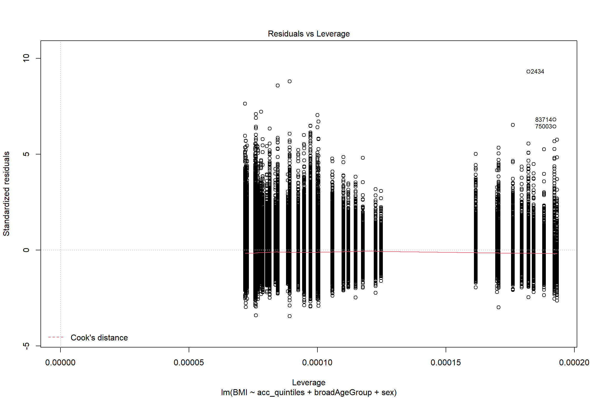

A Basic Health Association Analysis
3_HealthAssociationAnalysis.RmdIn this tutorial, we will go through a basic health association analysis using movement behaviour data.
As well as external packages, we’ll use some helper functions we’ve prepared previously. If you want to modify them, you can find them in the file R/utils.R on the GitHub page (see also intro notes).
1 Load in data
First we will load required packages, and the data we already prepared.
# First we need to install packages that aren't already present.
if (!require("pacman")) install.packages("pacman")
#> Loading required package: pacman
pacman::p_load(devtools, ggplot2, reshape2, data.table, table1)
#> Installing package into 'C:/Users/rosemaryw/AppData/Local/Temp/RtmpM1Oz8L/temp_libpath39743fab7ab'
#> (as 'lib' is unspecified)
#> Warning: unable to access index for repository http://www.stats.ox.ac.uk/pub/RWin/bin/windows/contrib/4.1:
#> cannot open URL 'http://www.stats.ox.ac.uk/pub/RWin/bin/windows/contrib/4.1/PACKAGES'
#> package 'table1' successfully unpacked and MD5 sums checked
#>
#> The downloaded binary packages are in
#> C:\Users\rosemaryw\AppData\Local\Temp\RtmpegalqD\downloaded_packages
#>
#> table1 installed
# Load helper functions
source("../R/utils.R")
# We then load the data prepared in the last tutorial.
# To do this with example data, replace the file location below with
# "/cdtshared/wearables/health_data_files/dataset-with-preprocessing-done.csv"
df <- data.frame(fread("../data_and_data_prep/dataset-with-preprocessing-done.csv"))Note that this dataset has had some additional preprocessing (like that described at the end of the last tutorial) of the variables we’re going to use e.g. collapsing classes and removing missing data. Please make sure you’ve done this for the variables you’re using!
Here are some bits of extra prep:
- We need to make sure some variables are factors, as subsequent code relies on that. If you change the variables you use, you might need to add some variables here.
- I added in variables scaling the movement behaviour variables to the number of hours or minutes in a day.
- We will use an overall activity variable chopped by quintile in the data.
df$sex <- as.factor(df$Sex)
df$broadAgeGroup <- as.factor(df$broadAgeGroup)
behaviour_vars <- c("MVPA", "LIPA", "SB", "sleep")
for (variable in behaviour_vars){
df[, paste0(variable, "_min_per_day")] <- 24*60*df[, variable]
df[, paste0(variable, "_hr_per_day")] <- 24*df[, variable]
}
df$acc_quintiles <- cut(df$acc.overall.avg, breaks = c(quantile(df$acc.overall.avg, probs = seq(0, 1, by = 0.2), na.rm = TRUE))) # cut at quintiles2 Describe and explore the data
This section provides a few examples of descriptive analyses.
As always, it’s worth spending some time here getting to know the data. Are the patterns as you would expect? Does it raise any potential issues? (e.g. when thinking about confounding)
The analyses here are just a sample of what you could do - please do add to them.
2.1 Tables to describe the data
The following code constructs a table to describe participant characteristics (e.g. age, sex) by quintile of overall acitvity.
We are cheating a bit here by using a package that generates a nicely formatted table. You can of course write your own code to make a table of what you’re interested in.
table1::table1(~ sex + broadAgeGroup | acc_quintiles, data=df)| (1.88,21.4] (N=19318) |
(21.4,25.3] (N=19318) |
(25.3,29.1] (N=19318) |
(29.1,34.1] (N=19318) |
(34.1,99] (N=19318) |
Overall (N=96591) |
|
|---|---|---|---|---|---|---|
| sex | ||||||
| Female | 9413 (48.7%) | 10688 (55.3%) | 11258 (58.3%) | 11539 (59.7%) | 11489 (59.5%) | 54388 (56.3%) |
| Male | 9905 (51.3%) | 8630 (44.7%) | 8060 (41.7%) | 7779 (40.3%) | 7829 (40.5%) | 42203 (43.7%) |
| broadAgeGroup | ||||||
| 40-49 | 720 (3.7%) | 1182 (6.1%) | 1528 (7.9%) | 1921 (9.9%) | 2693 (13.9%) | 8044 (8.3%) |
| 50-59 | 3558 (18.4%) | 4662 (24.1%) | 5558 (28.8%) | 6308 (32.7%) | 7510 (38.9%) | 27596 (28.6%) |
| 60-69 | 9109 (47.2%) | 9175 (47.5%) | 8812 (45.6%) | 8471 (43.9%) | 7479 (38.7%) | 43047 (44.6%) |
| 70-79 | 5931 (30.7%) | 4299 (22.3%) | 3420 (17.7%) | 2618 (13.6%) | 1636 (8.5%) | 17904 (18.5%) |
2.2 Plots to describe the data
We’ll also plot some of the variables to get a feel for how they’re distributed.

#look at deciles
quantile(df$acc.overall.avg, prob = seq(0.1, 0.9, by = 0.1), na.rm = TRUE)
#> 10% 20% 30% 40% 50% 60% 70% 80%
#> 18.74054 21.44339 23.48021 25.32063 27.14073 29.05999 31.28748 34.11230
#> 90%
#> 38.45913
# MVPA
hist(df$MVPA_min_per_day, breaks=1000, xlim=c(0,300))
#look at deciles
quantile(df$MVPA_min_per_day, prob = seq(0.1, 0.9, by = 0.1), na.rm = TRUE)
#> 10% 20% 30% 40% 50% 60% 70% 80% 90%
#> 4.7808 9.5040 14.2128 19.2096 24.6960 30.9888 38.7216 49.0752 65.9088We can have a look at some of the machine-learned variables, to see if we believe them! Here we’ll look at plots of probability of being in a particular behaviour by time of day:
plotAverageDay(df, "sleep.hourOfDay.", ".avg", "Sleep (probability)")
Now let’s look descriptively at something we might expect to vary as activity status varies: BMI. This is just a descriptive plot i.e. it’s not adjusted for any other behaviours.
plotVarAndQuintile(df, # dataset
'acc.overall.avg', # exposure
'BMI', # outcome
FALSE # [TRUE/FALSE] save plots to PDF
)
3 Run a simple health association analysis
Let’s run a minimally (age and sex) adjusted linear model for BMI, against fifths of average acceleration vector magnitude. This is attempting to model statistically the association we were looking at descriptively in the end of the last section.
min_adj_lm_BMI <- lm(BMI ~acc_quintiles + broadAgeGroup+ sex, df)We can look at the model summary:
summary(min_adj_lm_BMI)
#>
#> Call:
#> lm(formula = BMI ~ acc_quintiles + broadAgeGroup + sex, data = df)
#>
#> Residuals:
#> Min 1Q Median 3Q Max
#> -14.945 -2.925 -0.615 2.188 40.351
#>
#> Coefficients:
#> Estimate Std. Error t value Pr(>|t|)
#> (Intercept) 28.390677 0.060119 472.244 <2e-16 ***
#> acc_quintiles(21.4,25.3] -1.408247 0.044359 -31.747 <2e-16 ***
#> acc_quintiles(25.3,29.1] -2.102492 0.044599 -47.143 <2e-16 ***
#> acc_quintiles(29.1,34.1] -2.686760 0.044915 -59.819 <2e-16 ***
#> acc_quintiles(34.1,99] -3.693319 0.045535 -81.109 <2e-16 ***
#> broadAgeGroup50-59 0.083937 0.055065 1.524 0.127
#> broadAgeGroup60-69 -0.007682 0.053196 -0.144 0.885
#> broadAgeGroup70-79 -0.506086 0.059509 -8.504 <2e-16 ***
#> sexMale 0.856438 0.028315 30.246 <2e-16 ***
#> ---
#> Signif. codes: 0 '***' 0.001 '**' 0.01 '*' 0.05 '.' 0.1 ' ' 1
#>
#> Residual standard error: 4.336 on 96364 degrees of freedom
#> (218 observations deleted due to missingness)
#> Multiple R-squared: 0.08384, Adjusted R-squared: 0.08376
#> F-statistic: 1102 on 8 and 96364 DF, p-value: < 2.2e-16We can also look at the model diagnostics to understand more about the fit of the model:
plot(min_adj_lm_BMI) The problem with the Q-Q plot is caused by the BMI distribution - log-transforming the outcome would be a good option in this case.
4 Next steps for modelling
Here we’ve looked at a very simple linear model. Next steps might be:
- adjusting for confounders (e.g. perhaps socioeconomic status affects both level of activity and BMI)
- refining the definition of the exposure or looking at different exposure variables
- looking at different outcomes
- logistic regression for prevalent disease (use the
glmfunction) - Cox regression for incident disease (see for example the
survivalpackage and thecoxphfunction)
5 Getting started with Cox regression
For example, here’s an initial Cox regression analysis associating quintiles of overall acceleration with incident ischaemic heart disease.
First we need to set up the data in an appropriate format, with a follow-up time and an indicator at exit indicating whether the participant exited due to an event or due to being censored (either the participant died of another cause or study data ended before they had an event).
# Exclude participants with prevalent IHD
cat(sum(df$ischaemic.heart.disease.prevalent), " were excluded due to prior ischaemic heart disease")
#> 4912 were excluded due to prior ischaemic heart disease
df <- df[df$ischaemic.heart.disease.prevalent == 0, ]
# We need to process participants who died as they are censored earlier
# Replace the file location below with "/cdtshared/wearables/health_data_files/death.txt"
death <- read.csv("../data_and_data_prep/death.txt",
sep = "\t")
death <- death[death$ins_index == 0, ] #Keep just one record per participant (a very small number of participants have duplicate records)
df$died <- 0
df$died[df$eid %in% death$eid ] <- 1 # Add an indicator for death
df <- merge(df[, colnames(df)[colnames(df) != "date_of_death"]], death[, c("eid", "date_of_death")], by = "eid", all.x = TRUE)
cat(sum(df$died), "participants died")
#> 2316 participants died
# Note censoring dates of 31.12.20 in England/Scotland and 28.02.2018 in Wales (https://biobank.ndph.ox.ac.uk/ukb/exinfo.cgi?src=Data_providers_and_dates)
df$censoring <- as.Date("31/12/2020", format = "%d/%m/%Y")
df$censoring[df$UkBiobankAssessCent %in% c("Cardiff", "Wrexham", "Swansea")] <- as.Date("28/02/2018", format = "%d/%m/%Y")
# For people who died, we need to censor them at the earliest of their date of death and overall censoring (e.g. a participant in Wales who died in 2020 should nonetheless be # censored at 28.02.2018 - if they had an IHD event in 2019 we wouldn't know about it
died <- (df$died == 1)
df$censoring[died] <- pmin(df$censoring[died], as.Date(df$date_of_death[died], format = "%d/%m/%Y"))
# Add follow up variable (censor date for participants without an event, event date for participants with an event)
df$follow_up <- df$censoring
had_ihd <- df$ischaemic.heart.disease.incident == 1 # make indicator variable
df$follow_up[had_ihd] <- pmin(as.Date(df$ischaemic.heart.disease[had_ihd], format = "%Y-%m-%d"), df$censoring[had_ihd])
# Note event status at censoring (again, care taken as there are some instances of entries in the data after censoring)
df$IHD_at_exit <- 0
df$IHD_at_exit[had_ihd & (as.Date(df$ischaemic.heart.disease, format = "%Y-%m-%d") == df$follow_up)] <- 1
cat(sum(df$IHD_at_exit), " had incident hospital diagnosed ischaemic heart disease within the follow up period")
#> 3133 had incident hospital diagnosed ischaemic heart disease within the follow up period
# Calculate follow up time
df$fu_time <- as.numeric(difftime(df$follow_up, as.Date(df$EndTimWear, "%Y-%m-%d %H:%M:%S", tz = "Europe/London")))When working with date data, especially when dates are only present for some participants, it is very easy to write code which behaves in strange ways… I did so several times when writing this example (and don’t guarantee it’s error-free now). It is well worth inspecting your data repeatedly to check that the code is doing what you expect. This is obviously not shown here as I can’t print the data frame on the internet… Bear this in mind when using RMarkdown.
We now have an event status indicator at exit and a follow-up time variable, which is enough to run a Cox model (using the survival package in R):
library(survival)
cox_model <- coxph(Surv(fu_time, IHD_at_exit) ~ broadAgeGroup + sex + acc_quintiles, df)
summary(cox_model)
#> Call:
#> coxph(formula = Surv(fu_time, IHD_at_exit) ~ broadAgeGroup +
#> sex + acc_quintiles, data = df)
#>
#> n= 91678, number of events= 3133
#> (1 observation deleted due to missingness)
#>
#> coef exp(coef) se(coef) z Pr(>|z|)
#> broadAgeGroup50-59 0.69595 2.00561 0.12645 5.504 3.72e-08 ***
#> broadAgeGroup60-69 1.40200 4.06331 0.12090 11.597 < 2e-16 ***
#> broadAgeGroup70-79 1.84106 6.30324 0.12285 14.987 < 2e-16 ***
#> sexMale 0.77115 2.16224 0.03708 20.794 < 2e-16 ***
#> acc_quintiles(21.4,25.3] -0.17823 0.83675 0.04985 -3.575 0.00035 ***
#> acc_quintiles(25.3,29.1] -0.34817 0.70598 0.05355 -6.502 7.94e-11 ***
#> acc_quintiles(29.1,34.1] -0.37105 0.69001 0.05530 -6.710 1.94e-11 ***
#> acc_quintiles(34.1,99] -0.59431 0.55194 0.06194 -9.595 < 2e-16 ***
#> ---
#> Signif. codes: 0 '***' 0.001 '**' 0.01 '*' 0.05 '.' 0.1 ' ' 1
#>
#> exp(coef) exp(-coef) lower .95 upper .95
#> broadAgeGroup50-59 2.0056 0.4986 1.5654 2.5697
#> broadAgeGroup60-69 4.0633 0.2461 3.2061 5.1498
#> broadAgeGroup70-79 6.3032 0.1586 4.9545 8.0192
#> sexMale 2.1622 0.4625 2.0107 2.3253
#> acc_quintiles(21.4,25.3] 0.8367 1.1951 0.7589 0.9226
#> acc_quintiles(25.3,29.1] 0.7060 1.4165 0.6356 0.7841
#> acc_quintiles(29.1,34.1] 0.6900 1.4493 0.6191 0.7690
#> acc_quintiles(34.1,99] 0.5519 1.8118 0.4888 0.6232
#>
#> Concordance= 0.694 (se = 0.004 )
#> Likelihood ratio test= 1488 on 8 df, p=<2e-16
#> Wald test = 1337 on 8 df, p=<2e-16
#> Score (logrank) test = 1492 on 8 df, p=<2e-16The exp(coef) column gives the hazard ratio. Not surprisingly, older age and male sex are associated with higher risk of ischaemic heart disease, whereas a higher level of activity is associated with a lower risk of ischaemic heart disease. Again, you would probably want to substantially refine this model. For example, it would be good to adjust for possible confounders, and you might also want to look into model diagnostics to understand if assumptions, such as the proportional hazards assumption (see section 23.2.5 and 23.2.6). You might want to refine the outcome definition - e.g. a different set of ICD-10 codes, or adding in ischaemic heart disease events recorded only on the death register (by using information in death_cause.txt).
A bonus: here we’ve adjusted the model for baseline age (in fact, in very crude groups) and used time-on-study as the timescale in the Cox regression analysis. This is what most introductory texts do. However, in epidemiological studies, time-on-study might not be the most relevant timescale. Age might be a more appropriate timescale…
Have fun! :)